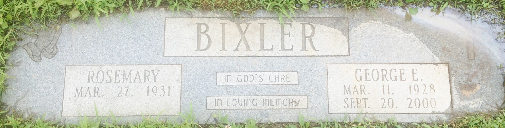
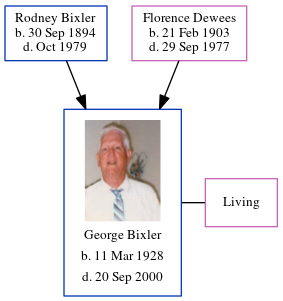

Rev George Edward Bixler 1928 - 2000
[ Home ] | [ Calendar ] | [ Surnames Index ] | [ Census Index ] | [ Family History ]The 5th of 6 children of Rodney Bixler and Florence Dewees, George Bixler, the fifth cousin once-removed on the mother's side of Nigel Horne, was born in Owen, Indiana, USA on Mar 11, 19281,2,3,4. He married Rosemary Shepherd in Clay, Indiana, USA on Oct 13, 19515.
During his life, he was living in Clay, Indiana on Apr 1, 19302; and in Lafayette, Indiana on Apr 1, 19403.
He died on Sep 20, 2000 in Brazil, Indiana1 and was buried at Fairview Cemetery, Bowling Green, Indiana after Sep 20, 20006.
Parents
- Rodney Jay was born on Sep 30, 1894
- Florence May was born on Feb 21, 1903
Citations
- Social Security Death Index - Findmypast
- US Census 1930 - Findmypast (was age 2 and the son of the head of the household)
- US Census 1940 - Findmypast (was age 12 and the son of the head of the household)
- United States Marriages - Findmypast
- United States Marriages - Findmypast
- Find A Grave http://www.findagrave.com
Media
George Bixler - headstone

George Edward Bixler
US Census 1940 - USC/1940/1455776744
United States Marriages - FS/MAR/40542388/1
Social Security Death Index - USBMD/SSDI/333260719
Family Tree
Generated by ged2site. Last updated on Jun 11, 2024